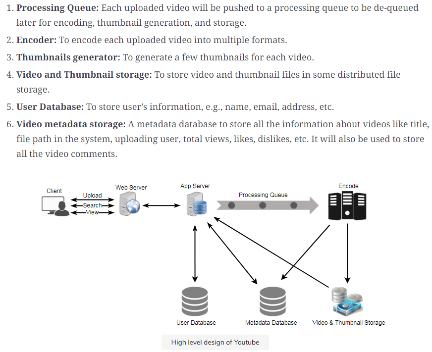

Groking system interview Answer
实用范围： Streaming service: Youtube, Netflix, Spotify
Step1:
Assumption: each minute user uploads 500 hours worth video
Storage: each minute takes 50MB storage, 500 * 60 * 50MB = 1500GB / minute = 25GB/s
bandwidth: upload per minute video takes 10MB bandwidth, 500 * 60 * 10MB = 300GB/minute = 5GB/s
Step2: System API,
(1)UploadVideo(API_dev_key, title, description, tags[], category, recording_detail, video_content);
a. A successful upload will return HTTP 202 (request accepted), We can also expose a queryable API to let users know the current status of their uploaded video.
b. once the video encoding is completed the user is notified through email with a link to access the video.
(2)SearchVideo(API_dev_key, keyword, Max_numbers_Items_to_return, page Token)
return Json that contains list of items, where each item consists video title, thumbnail, creation time, author.
(3)StreamVideo(API_dev_key, videoid, offset, device)
return the video stream starting from offset.
Step 3: Service Architecture

Web server -> App server -> distributed File System (S3)
|
metadata Database
Load balancing: ?
Redrection between cache servers
Cache:
Metadata will be saved in cache database, such as MemcacheD or Redis.
This is dedicated cache service, all backend machine will hit it.
Database is large, we cannot save all entries in Cache, so we must have
eviction policy? LRU is popular Eviction policy.
Example in Ads:
indexA is a aggregator, canbe interpreted as a backend server layer1.
IndexP has 16 partitions, it can be interpreted as combination of backend server
and DB server that caches data in memory and save in disk. There is no global cache machine
CDN:
store popular video, that is saved in different geographic locations.
request will be routed to CDN that is close to user. Less popular data
will be read from backend Distributed file system.
s